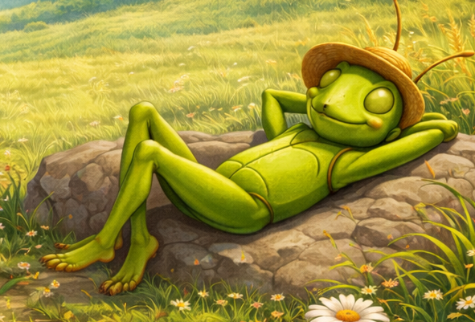

Page Down
|
Teacher/Parent Resource Corner:
|

|
The Ant and the Grasshopper
Si Langgam at Si Tipaklong
|

|
|
|
|
Maganda ang panahon. Mainit ang sikat ng araw. Maaga pa lamang ay gising na
gising na si Langgam. Nagluto siya at kumain. Ilang sandali pa, lumakad na siya.
Gaya ng dati, naghanap siya ng pagkain. Isang butil ng bigas ang nakita niya.
Pinasan niya ito at dinala sa kanyang bahay. Nakita siya ni Tipaklong.
"Magandang umaga kaibigang Langgam," bati ni Tipaklong.
"Kay bigat ng iyong dala. Bakit ba wala kanang ginawa kundi maghanap at mag-ipon ng pagkain?"
"Oo nga, nag-iipon ako ng pagkain habang maganda ang panahon," sagot ni Langgam.
"Tumulad ka sa akin, kaibigang Langgam," wika ni Tipaklong. "Habang maganda
ang panahon, tayo ay magsaya. Halika, tayo ay lumukso. Tayo ay kumanta."
"Ikaw na lang kaibigang Tipaklong," sagot ni Langgam. "Gaya ng sinabi ko sa iyo,
habang maganda ang panahon ako ay naghahanap ng pagkain. Ito'y aking iipunin
para ako ay may makain pag sumama ang panahon."
Lumipas pa ang maraming araw, dumating na ang tag-ulan. Ulan sa umaga,
ulan sa hapon at sa gabi umuulan pa rin. At dumating ang panahong kumidlat,
kumulog at lumakas ang hangin kasabay ang pagbuhos ngmalakas na ulan.
Ginaw na ginaw at gutom na gutom ang kaawa-awang Tipaklong. Naalala niyang
puntahanang kaibigang si Langgam. Paglipas ng bagyo, pinilit ni Tipaklong
na marating ang bahay ni Langgam. Bahagya na siyang makalukso. Wala na ang
dating sigla ng masayahing si Tipaklong.
"Tok! Tok! Tok!"
Nang buksan ni Langgam ang pinto nagulat siya."Aba! Ang aking kaibigan,"
wika ni Langgam. "Tuloy ka Tipaklong."
Binigyan ni Langgam ng tuyong damit si Tipaklong. Mabilis na naghanda
siya ng pagkain. Ilan pang sandali at magkasalong kumain ng mainit na pagkain ang magkaibigan.
"Salamat, kaibigang Langgam," wika ni Tipaklong. "Ngayon ako naniniwala sa iyo.
Kailangan nga palang mag-ipon habang maganda ang panahon at nang may makain
pagdating ng tag-gutom."
Mula noon, nagbago si Tipaklong. Pagdating ng tag-init at habang maganda
ang panahon ay kasama nasiya ng kanyang kaibigang si Langgam. Natuto
siyang gumawa at higit sa lahat natuto siyang mag-impok.
|
|
|
|
|
The weather was beautiful. The sun was shining warmly.
Early in the morning, Ant was already wide awake. She cooked and ate.
After a while, she set off. As usual, she looked for food. She found
a grain of rice. He hoisted it onto her back and carried it to her house.
Grasshopper saw him.
""Good morning, friend Ant," greeted Grasshopper. "What you're carrying
is very heavy. Why do you do nothing but look for and gather food?"
"That's right, I'm gathering food while the weather is good," answered Ant.
"You should be like me, friend Ant," said Grasshopper. "While the weather is nice,
let's enjoy ourselves. Come on, let's jump. Let's sing.""
"You go ahead, friend Grasshopper," answered Ant. "Like I told you, while the
weather is good, I look for food. I will store this so I will have something
to eat when the weather turns bad."
Many more days passed, and the rainy season arrived. Rain in the morning,
rain in the afternoon, and in the evening it was still raining. Then came a
time when lightning flashed, thunder roared, and the wind grew strong along
with the heavy downpour. Poor Grasshopper was very cold and very hungry.
He remembered to visit his friend, Ant. After the storm passed, Grasshopper
forced himself to reach Ant's house. He could barely hop. The former
liveliness of the cheerful Grasshopper was gone.
"Knock! Knock! Knock!"
When Ant opened the door, he was surprised. "Oh! My friend," said Ant. "Come in, Grasshopper."
Ant gave Grasshopper some dry clothes. He quickly prepared food. In just
a few moments, the two friends were eating hot food together.
"Thank you, friend Ant," said Grasshopper. "Now I believe you.
It really is necessary to save while the weather is good so
there will be food to eat when the lean times come."
From then on, Grasshopper changed. When summer came and while the weather was good,
he was together with his friend Ant. He learned to work and, most importantly, he learned to save.
|
|
|
|
Si Langgam at si Tipaklong is the Filipino version of The Ant and the Grasshopper.
The story originally comes from the fables of Aesop, a storyteller from ancient Greece.
His collection, called Aesop's Fables, includes short stories that use animals to teach important life lessons.
In this story, the ant shows hard work and responsibility, while the grasshopper
shows what can happen when someone only thinks about having fun. The story takes
place during summer and winter. Summer is the time to prepare and work, while winter
shows the result of the choices the characters made. The characters, setting, and
events all help explain the main message: working hard and preparing today will
help us in the future.
This story also teaches important social skills. Children learn about responsibility,
self-discipline, and planning ahead. They understand that their choices have consequences.
The story encourages children to make good decisions, finish their tasks first,
and enjoy playtime in a balanced and responsible way.
|
|
Page Up
| |